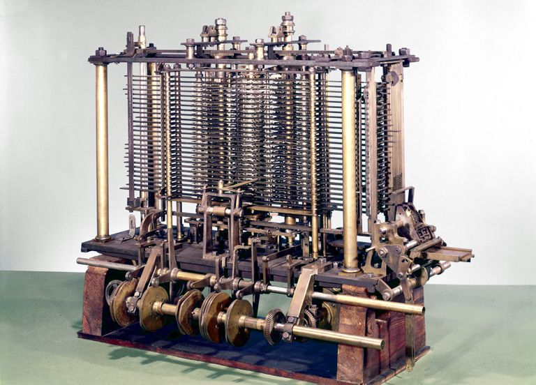
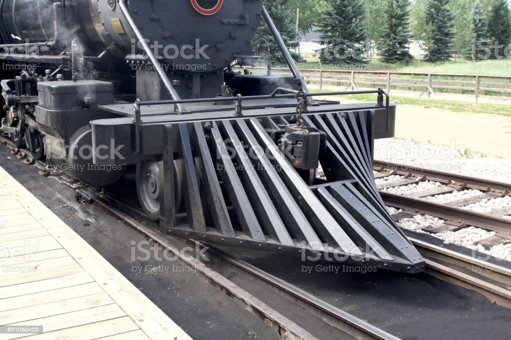
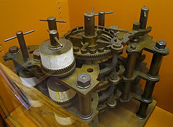

INVENTOS DESTACADOS DE BABBAGE
| NOMBRE | DESCRIPCIÓN | IMAGEN |
|---|
| Máquina Analítica |
Diseño de computador moderno de uso general realizado por Charles Babbage, representó un paso importante en la historia de la informática. Inicialmente descrita en 1837, aunque Babbage continuó refinando el diseño hasta su muerte en 1871. La máquina no pudo construirse debido a razones de índole política pues hubo detractores por un posible uso de la máquina para fines bélicos. Fuente:https://es.wikipedia.org/wiki/Máquina_analítica |
 |
| Deflector de Obstáculos |
Dispositivo montado en su parte delantera para apartar los obstáculos situados sobre la vía que de otro modo podrían hacer descarrilar un tren. Además del deflector, se suelen instalar unas barras metálicas más pequeñas llamadas salvavidas, protectores de ferrocarril o planchas de protección, que se colocan inmediatamente delante de las ruedas. Sirven para apartar obstáculos más pequeños que se encuentran directamente sobre la superficie de rodadura de la cabeza del carril. Fuente:https://es.wikipedia.org/wiki/Deflector_de_obstáculos_(ferrocarril) |
 |
| Máquina Diferencial |
Calculadora mecánica de propósito especial, diseñada para calcular funciones polinómicas. Puesto que las funciones logarítmicas y trigonométricas pueden ser aproximadas por polinomios, esta máquina es más general de lo que parece al principio. Es un dispositivo de naturaleza mecánica para calcular e imprimir tablas de funciones. Más concretamente, calcula el valor numérico de una función polinómica sobre una progresión aritmética obteniendo una tabla de valores que se aproxima a la función real (basado en que cualquier función puede ser aproximada por polinomios). Fuente:https://es.wikipedia.org/wiki/Máquina_diferencial |
 |